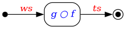

2.6. Data Flow¶
In Section 2.4, the example was given for creating tracks from wires. The simplified expression for doing this was the chained application of two functions \(f\) and \(g\) such that:
where \(ws\) and \(ts\) are the wires and tracks, respectively. An alternative representation is a directed graph
![digraph {
rankdir=LR
node [shape="box", style="rounded"]
start [shape="point", width=0.1]
end [shape="point", width=0.1, peripheries=2]
f [label=<<i><font color="blue">f</font></i>>];
g [label=<<i><font color="blue">g</font></i>>];
start -> f [label=<<i><font color="red">ws</font></i>>]
f -> g [label=<<i><font color="darkgray">hs</font></i>>]
g -> end [label=<<i><font color="red">ts</font></i>>]
}](../images/graphviz-fe8c7c243fe9dac597204549d0718d2c34d86b0b.png)
where the functions \(f\) and \(g\) are vertices or nodes and the data \(ws\) and \(ts\) are passed along arrows or edges that connect the nodes [1]. The arrows indicate the flow of the data (or data flow) through the graph.
Some observations:
The function \(f\) returns hits that are unlabeled in the equational form. For the graph above, we explicitly label those hits as \(hs\) to emphasize that data are always passed along edges. If, however, the hits are not needed by any other function in the graph, the two functions \(f\) and \(g\) can be replaced by their composition \(h=g \circ f\), resulting in potential performance improvements in computational efficiency and program memory usage.
Each edge of a directed graph must have a source (the tail of the arrow) and a target (the head of the arrow). This means that whereas the equation does not need to specify where the \(ws\) wires originate (or where the \(ts\) tracks end up), such locations must be specified in the graph. Any node that has only outgoing edges is called a source (denoted by a solid dot), and any node that has only incoming edges is a sink (denoted by an encircled solid dot).
2.6.1. Data Flow with Families¶
As mentioned earlier in Section 2.5, processing families of data is a critical aspect of obtaining physics results. The data-flow discussion in the previous section naturally maps to applying the functions \(f\) and \(g\) to elements of families. Specifically [2]:
The families \(\fami{ws}\), \(\fami{hs}\), and \(\fami{ts}\) are passed along the edges instead of the individual objects \(ws\), \(hs\), and \(ts\).
The functions \(f\) and \(g\) map to \(\transform{f}\) and \(\transform{g}\), respectively.
![digraph {
rankdir=LR
node [shape="box", style="rounded"]
start [shape="point", width=0.1]
end [shape="point", width=0.1, peripheries=2]
f [label=<transform( <i><font color="blue">f</font></i> )>];
g [label=<transform( <i><font color="blue">g</font></i> )>];
start -> f [label=<<table cellpadding="1" border="0" cellborder="0">
<tr><td>[<i><font color="red">ws</font><sub>i</sub></i>]</td></tr>
</table>>]
f -> g [label=<<table cellpadding="1" border="0" cellborder="0">
<tr><td><font color="darkgray">[<i>hs<sub>i</sub></i>]</font></td></tr>
</table>>]
g -> end [label=<<table cellpadding="1" border="0" cellborder="0">
<tr><td>[<i><font color="red">ts</font><sub>i</sub></i>]</td></tr>
</table>>]
}](../images/graphviz-5f88bbb489d0643643a0d7c564bcb621d71bc1c8.png)
The above graph does not specify an implementation—assuming \(f\) and \(g\) are pure functions (see Section 2.4.1), the same result is obtained if (a) full families are passed between the nodes, or (b) one element per family is passed at a time. Determining whether option (a) or (b) is more efficient depends on the data passed between the nodes and the overall constraints on the program.
One benefit to using a graph representation using data families and higher-order functions is the ability to easily express folds and unfolds. As an illustration, consider the calculation of a sum of squares for all integers from 1 through \(n\):
This calculation requires three separate steps:
an unfold called \(\textit{iota}\) that, given an integer \(n\), generates a sequence of integers from 1 through \(n\),
a transformation that squares each integer in the sequence using an algorithm called \(\textit{square}\), and
a fold called \(\textit{sum}\) that sums all squared integers.
The data-flow graph of individual objects looks like:
![digraph {
rankdir=LR
node [shape="box", style="rounded"]
start [shape="point", width=0.1]
end [shape="point", width=0.1, peripheries=2]
iota [label=<iota>];
transform [label=<<i><font color="blue">square</font></i>>];
sum [label=<sum>];
start -> iota [label=<<table cellpadding="1" border="0" cellborder="0">
<tr><td><font color="red"><i>n</i></font></td></tr>
</table>>]
iota -> transform [label=<<table cellpadding="1" border="0" cellborder="0">
<tr><td><font color="red"><i>1</i></font></td></tr>
</table>>]
iota -> transform [label=<<table cellpadding="1" border="0" cellborder="0">
<tr><td><font color="red"><i>2</i></font></td></tr>
</table>>]
iota -> transform [label=<<font color="red">⋮</font>>, penwidth=0, arrowhead=none]
iota -> transform [label=<<table cellpadding="1" border="0" cellborder="0">
<tr><td><font color="red"><i>n</i></font></td></tr>
</table>>]
transform -> sum [label=<<table cellpadding="1" border="0" cellborder="0">
<tr><td><font color="red"><i>1</i></font></td></tr>
</table>>]
transform -> sum [label=<<table cellpadding="1" border="0" cellborder="0">
<tr><td><font color="red"><i>4</i></font></td></tr>
</table>>]
transform -> sum [label=<<font color="red">⋮</font>>, penwidth=0, arrowhead=none]
transform -> sum [label=<<table cellpadding="1" border="0" cellborder="0">
<tr><td><font color="red"><i>n<sup>2</sup></i></font></td></tr>
</table>>]
sum -> end [label=<<table cellpadding="1" border="0" cellborder="0">
<tr><td><font color="red"><i>S </i>(<i>n</i>)</font></td></tr>
</table>>]
}](../images/graphviz-386feb20175ccf85d12ea250a31790fce1c640a0.png)
where each number is passed along its own edge to the nodes performing the calculation.
The summation formula for \(S(n)\), however, can be expressed in terms of higher-order functions that reflect the three steps above:
where:
\(\text{iota}\) or \(\unfold{greater\_than\_zero}{decrement}\) is a function that returns a sequence given a value of \(n\),
\(\transform{\textcolor{blue}{\textit{square}}}\) is a function applied to the sequence generated in step 1.
\(\text{sum}\) or \(\fold{+}{0}\) is a function that returns a single result when applied to the result of step 2.
Note that the unfold takes two operators: the predicate \(greater\_than\_zero\), which tests whether the next generated number is greater than zero, and the \(decrement\) operator, which decrements the next generated number by 1. [3] Once the predicate returns false, the unfold stops generating numbers.
By adopting the HOF representation of the sum-of-squares problem, the data-flow graph is simplified:
![digraph {
rankdir=LR
node [shape="box", style="rounded"]
start [shape="point", width=0.1]
end [shape="point", width=0.1, peripheries=2]
iota [label=<iota>];
transform [label=<transform(<i><font color="blue">square</font></i>)>];
sum [label=<sum>];
start -> iota [label=<<table cellpadding="1" border="0" cellborder="0">
<tr><td><font color="red"><i>n</i></font></td></tr>
</table>>]
iota -> transform [label=<<table cellpadding="1" border="0" cellborder="0">
<tr><td><font color="red">[<i>i</i>]</font></td></tr>
</table>>]
transform -> sum [label=<<table cellpadding="1" border="0" cellborder="0">
<tr><td><font color="red">[<i>i<sup>2</sup></i>]</font></td></tr>
</table>>]
sum -> end [label=<<table cellpadding="1" border="0" cellborder="0">
<tr><td><font color="red"><i>S </i>(<i>n</i>)</font></td></tr>
</table>>]
}](../images/graphviz-7cc60692de44e915ddea1ddbba69adb3c380d013.png)
In addition, the topology of the family-based graph remains the same regardless of the value of \(n\); the topology of the object-based graph becomes intractable as \(n\) increases.
The vast majority of graphs included in this design document adopt the family-based data-flow representation.
Footnotes